-
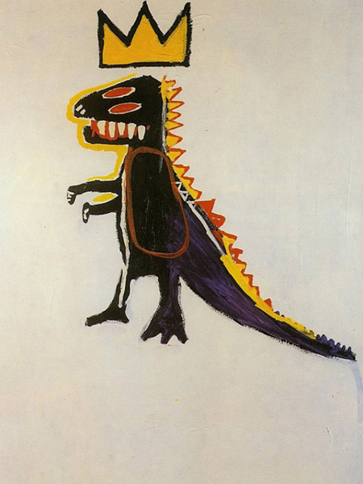
Jean Michel Basquiat
Pez Dispenser, 1984
Paper: 40x30cm / Image: 30x20cm
Geclee Archival Print -
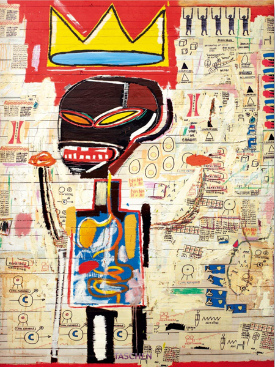
Jean Michel Basquiat
Grillo, 1984
Paper: 40x30cm / Image: 30x20cm
Geclee Archival Print -
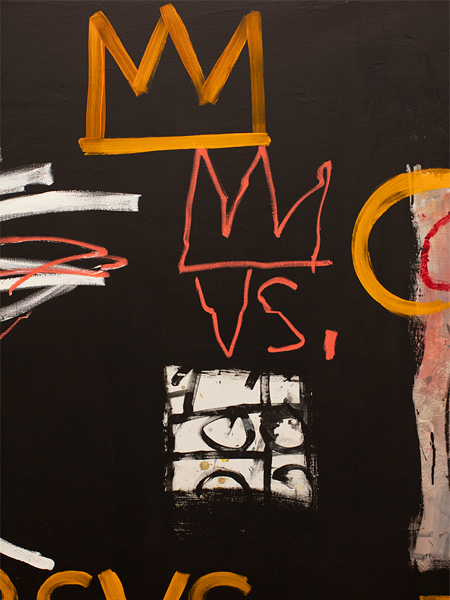
Jean Michel Basquiat
Untitled (Cowboy And Indian), 1983
acrylic and oil stick on canvas
50x105 In (127x266.7cm)
-
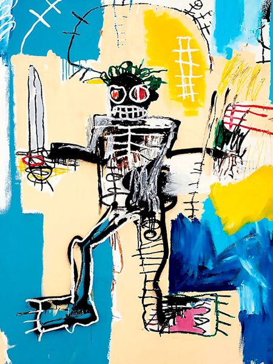
Jean Michel Basquiat
Warrior, 1982
Paper: 40x30cm / Image: 30x20cm
Geclee Archival Print -
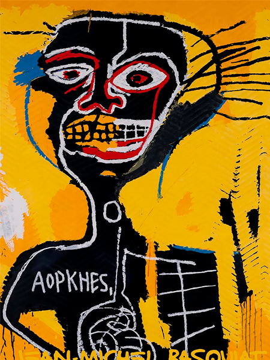
Jean Michel Basquiat
Ironía del policía negro, 1981
Oleo sobre lienzo, con acrílico y crayóny
(122 cm x 83 cm) -
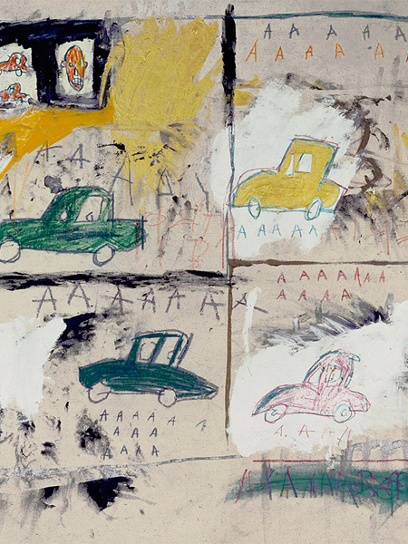
Jean Michel Basquiat
Old Cars, 1981
Acrylic, oil stick, and paper collage on canvas,
121.9 x 120.3cm
-
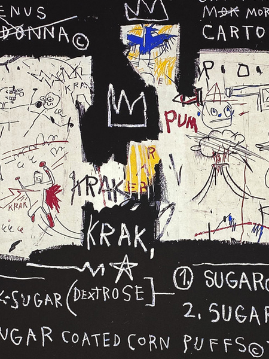
Jean Michel Basquiat
Panel of Experts
59 x 60cm,
Archival Pigment Printt -
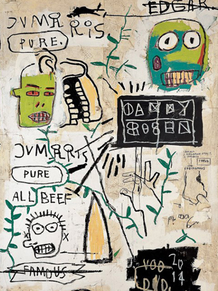
Jean Michel Basquiat
Danny Rosen, 1983
Paper: 50x33cm / Image: 40x23cm
Geclee Archival Print -
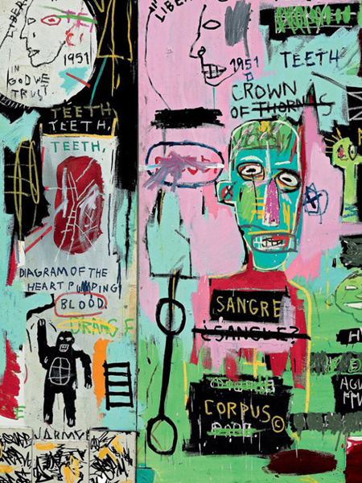
Jean Michel Basquiat
In Italian, 1983
Paper: 76.6 x 86.4 cm
textured matte paper
giclee print
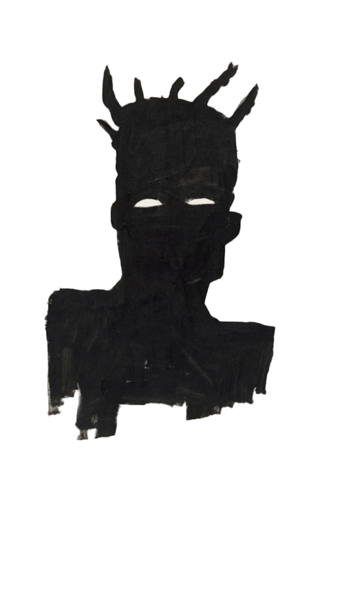
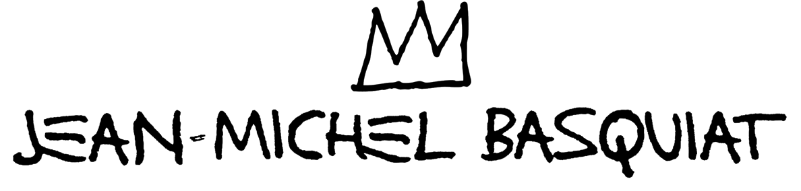
Crown
그의 그림에서 가장 먼저 눈에 들어오는 건 왕관 Crown 모양이다. 특정 아티스트 그리고 흑인들에 대한 존중에서 시작된 이 왕관 모형은 훗날 왕관만을 그려 넣는 것 외에 점차 본인의 서명대신 사용했을 정도로 소유권과 권위를 나타내는 ‘도장’ 과 다름 없는 부분이 되었다. 주관적으로 바라본 시선에선 야망 ambition 의 상징처럼 다가온다. 존중보다 조금 더 나간 느낌의야심과 자신감.
알파벳 A,
그리고 해골 형태
그의 그림 속 ‘AAAAA’ 형태로 등장하는 반복적인 이니셜은 뉴욕 브루클린에서 가장 흔히 들리는 앰뷸런스의 사이렌 소리와 바스키아의 첫 번째 흑인 영웅인 야구선수 행크 아론 Hank Aaron의 성 첫 글자의 의미도 포함된다. 해골 형태의 인물과 신체 부위들은 그가 여덟 살 때 교통사고로 입원했을 당시 어머니가 선물한 해부학 교과서 ‘그레이의 해부학 (Gray’s Anatomy)’의 영향을 받은 것. 어린시절에 머물러 있는듯한 순수함, 강박적이면서도 내면의 어두운 부분을 강렬히 호소하는 듯한 감정이 느껴진다.

prev
next